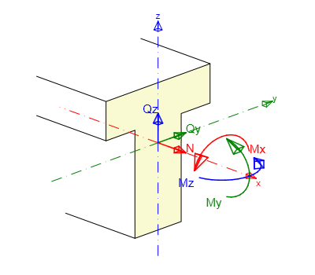

Class ResultOfInternalForces
Result of internal forces in the one position
[Obfuscation(Feature = "renaming")]
public class ResultOfInternalForces : SectionResultBase- Inheritance
-
ResultOfInternalForces
- Inherited Members
Remarks
Convention of internal forces on 1D members

Internal forces on 1D members perform following actions:
• positive bending moment My causes tension in cross-section fibers with negative z-coordinate
• positive bending moment Mz causes tension in fibers with negative y-coordinate
• positive torsional moment Mx acts about x-axis of 1D member
• positive axial force N acts in direction of x-axis of member and causes tension in cross-section fibers
• positive shear force Qz acts in direction of z-axis of cross-section
• positive shear force Qy acts in direction of y-axis of cross-section
Constructors
ResultOfInternalForces()
Constructor
public ResultOfInternalForces()Properties
Mx
Bending moment around x-axis
public double Mx { get; set; }Property Value
My
Bending moment around y-axis
public double My { get; set; }Property Value
Mz
Bending moment around z-axis
public double Mz { get; set; }Property Value
N
Normal force
public double N { get; set; }Property Value
Qy
Shear force in y dirrection
public double Qy { get; set; }Property Value
Qz
Shear force in z dirrection
public double Qz { get; set; }